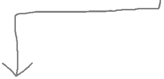

Paper accepted to CV section of IMAC
"3D Neural Rendering for Automated Ultrasonic Laser Scans", lead author
Hey! Thanks for visiting my website.
I'm currently researching at Los Alamos National Laboratory on ML methods and agent scaffolds in satelite data. I'm also working on a SPAR project to build robot benchmarks for safety with Robocurve (YC S26)
I am deferring grad school at Carnegie Mellon University because I want to work on AI and nuclear safety. I think that the time window for international colaboration on AI security is short. I was a part of the first Cambridge AI Safety Hub Hardware Security Cohort, and I plan to continue research on hardware security.
I grew up in Albuquerque and finished my undergrad degree at New Mexico Tech. I built the first piezoelectric wafer testing experiment in space, which flew on the MISSE platform of the International Space Station this year. I also organized and led a team to win $10k in funding for a NASA competition to build an optical damage detection sensor. I've worked with AFRL, SNL, and NASA for intern/Co-Op positions during school.
I am always open to new projects or meeting new people, so feel free to reach out to me!

"3D Neural Rendering for Automated Ultrasonic Laser Scans", lead author

The team I led won the innovation award at the NASA Human Lander Challenge.

“Structural health monitoring payload for the MISSE platform on the International Space Station”

Part of the MISSE substation.

Project leader of a team of interns for the Space Vehicles Directorate.